Feedback for Coding Exercises
Below is a list for you to reference with your feedback for various coding exercises. This is general feedback that while not entirely specific to your code should still be helpful in imprroving your code for next time.
There are example images to use as references and you can click on them to make them larger.
Table of Contents
HTML Files
- Indents
- Breaking Paragraphs
- Empty Lines
- Nonexistant Elements
- Inline Styles
- Break Tags
- Missing/Incorrect Closing Tabs
- Marking Up Semantically
CSS Files
- Indents
- Empty Lines
- Nonexistant Elements
- Missing Semicolons
- Missing Curly Bracket
- Missing Unit on Numbers
HTML Files
#1: Indents
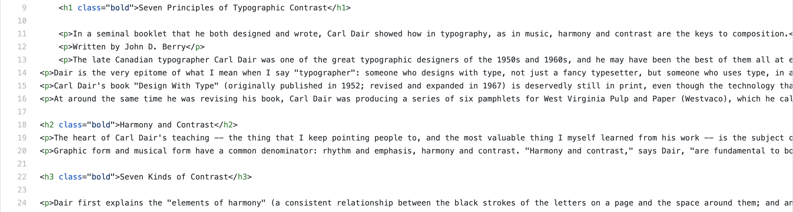Indenting is important for easily readable code for humans. It helps give the code structure and a kind of hierarchy. When indenting remember that anytime you have a child element it should be indented one level from the parent and the opening and closing tag should be at the same indent level if they are on different lines. The html element is never indented, the head and body elements are indented one level. The content in the head is most likely all at the same indent level one in from the head indent. The content in the body gets more complicated but just remember that siblings exist at the same indent level and children one in from their parent.
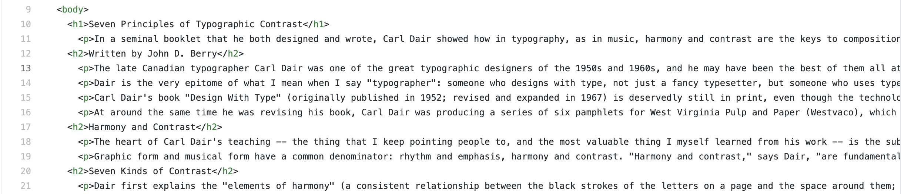Sometimes I see paragraph elements indented one level more than the heading level above it. This makes some amount of sense logically because the paragraph is under that heading element but it is a habit that can lead to confusion.
#2: Breaking Paragraphs
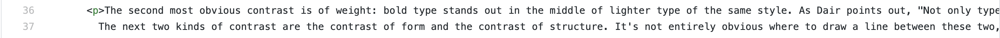Paragraph elements should be all on one line. You should not have the opening p tag and the closing p tag on different lines. This rule applies to all text elements (h1, h3, h3, h4, h5, h6, p, li, etc.). If you want the text to show up as two distinct paragraphs you should make two distinct paragraphs, the line break is not doing anything.
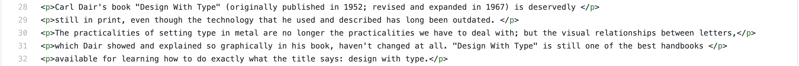You also don't want to break a single paragraph into multiple paragraphs unless you have a verry specific, design related reason to do so. This might seem like how you might fix the rag but it will cause more problems than it will solve.
#3: Empty Lines
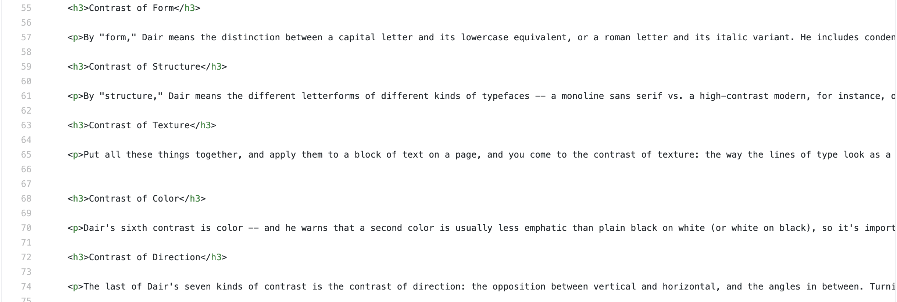While empty lines are technically not hurting anything they do take up some amount of file space and make your files longer than they need to be. It is a habit worth breaking.
#4: Nonexistant Elements
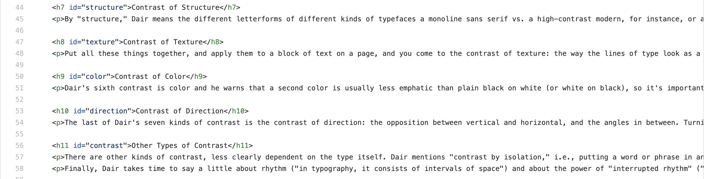Code uses elements that do not exist in HTML. This is most common with heading elements. There are only heading elements from h1 to h6. There is no h7, h8, h9, etc. and more than likely you shouldn't need more than 6 heading levels on the site anyway. Remember that there should really only be one h1 element on each page but the others (h3, h3, h4, h5, h6) can all be used over and over.
#5: Inline Styles
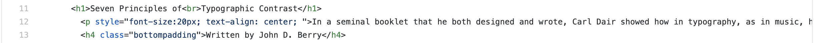If you find yourself wanting to add inline styles think about why you are doing it. If you are doing it because that specific element needs to be different, add a class to the element and put the styles in the CSS using a class selector. If you only have one element on the page of that type and you just want to style it quickly you should still add an element selector and the styles to that selector in the CSS.
#6: Break Tags
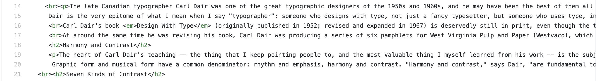Break tags, <br>, should be used sparingly and for very specific reasons. If you find yourself using them to add vertical space to the page you would be betteer served by adding a top or bottom margin to whichever elements you are trying to space out. Using break tags works but if you want to make the space where you used them bigger or smaller it becomes hard but with margins you can increase or decrease the number.
#7: Missing/Incorrect Closing Tags
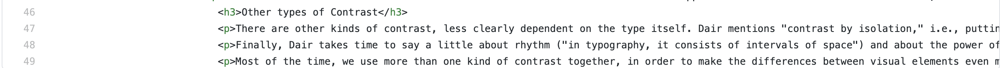Closing tags are missing. For almost every element you need to make sure you have the opening tag and the closing tag there.

The other issue could be that you are writing your closing tags incorrectly by either forgetting the forward slash, putting the element name then the forward slash, or not matching the element names.
#8: Marking Up Semantically
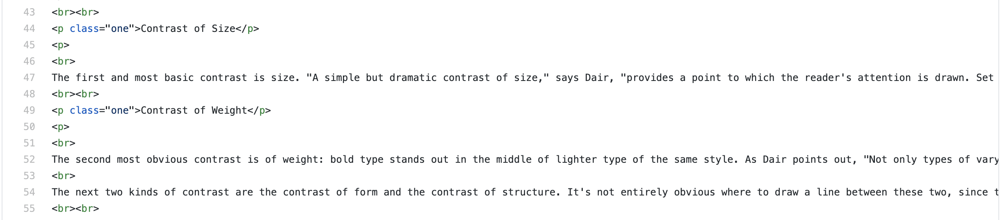Marking the content up semantically is important because it helps with accessibility. Making headings in the text paragraphs in the HTML file or lists of items in the text into a series of paragraphs in the text does a disservice to those who need the elements to help them understand the site.
#9: Closing Tag Order
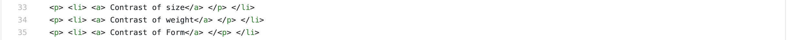Careful attention needs to be paid to the order of the closing tags. Getting the order wrong could cause issues down your page as the browser tries to correct for the closing tag it was expecting to find.
CSS Files
#1: Indents
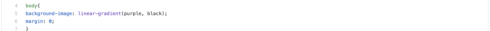Indenting is important for easily readable code for humans. It helps give the code structure and a kind of hierarchy. When indenting remember that anytime you declarations for a selector they should be indented one level more than the selector. Most commonly selectors will be aligned to the left margin of your editor. The exception for us is if you are writing styles in a media query which will indent the selector one level and the declarations one more level.
#2: Empty Lines
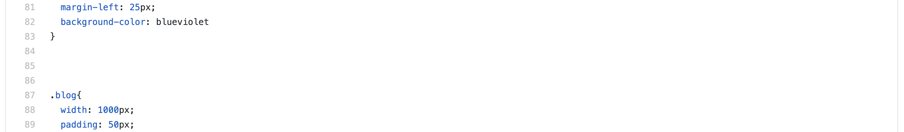While empty lines are technically not hurting anything they do take up some amount of file space and make your files longer than they need to be. It is a habit worth breaking.
Nonexistant Elements
Writing styles for elements that don't exist.
Missing Semicolons
Each declaration in your CSS needs a semicolon at the end of it. A line with no semicolon will most likely break that line and the line beneath it. The only exception to this is the final declaration in a style.
Missing Curly Bracket
Each style rule needs a curly bracket that opens the styles after the selector and a closing curly bracket after all the declarations to close the styles.
Missing Unit on Numbers
All numbers that are specifying some kind of measurment need a unit (px, %, vw, em, rem, etc.) with the exception of 0. 0 is the same no matter what unit you are using so it does not need the unit.